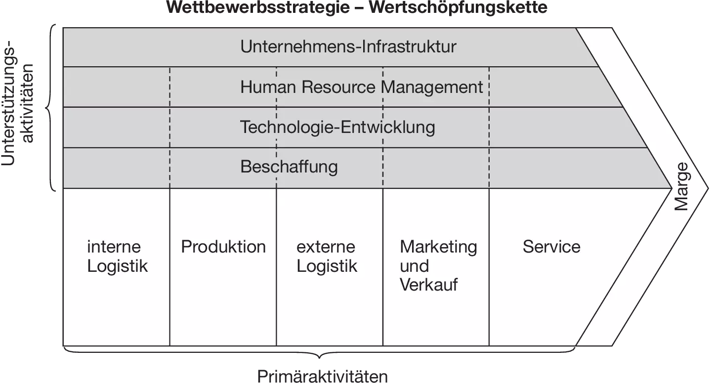
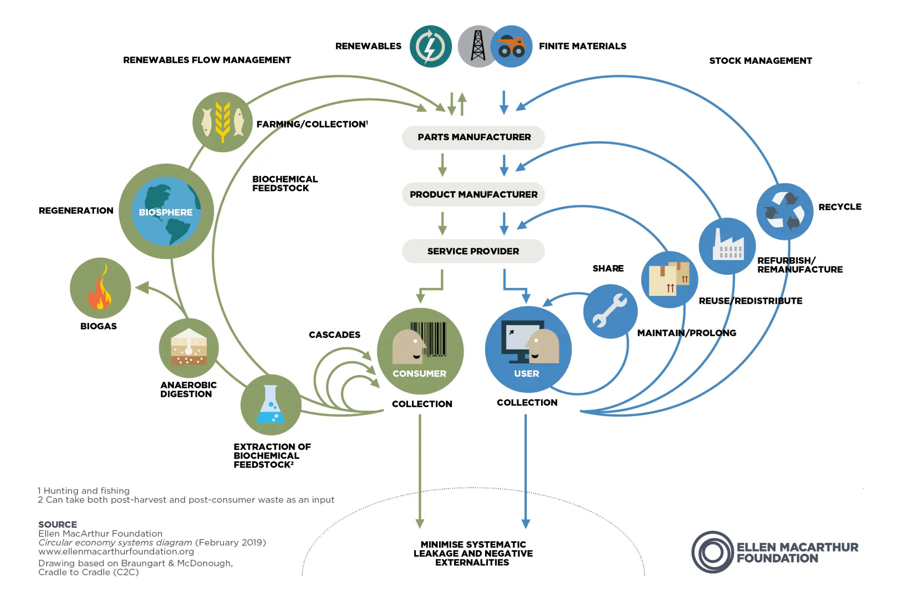
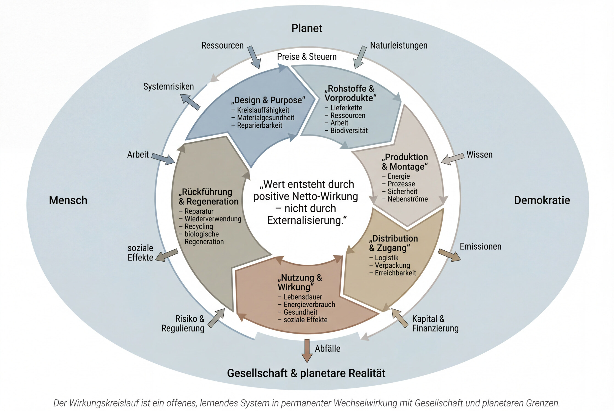

Einordnung vorab
Die Wirkungsökonomie ist ihrem Anspruch nach kein betriebswirtschaftliches Optimierungsinstrument, sondern ein systemischer Ansatz zur Steuerung von Märkten. Sie setzt nicht bei einzelnen Unternehmen an, sondern bei den Regeln, Anreizen und Rückkopplungen, durch die wirtschaftliches Handeln insgesamt geprägt wird.
In diesem Sinne ist die Wirkungsökonomie zunächst ein volkswirtschaftliches Ordnungsmodell: Sie beschreibt, wie Preise, Steuern, Kapitalkosten, Risiken und Regulierung so gestaltet werden können, dass positive Wirkung auf Mensch, Planet und Demokratie systematisch belohnt und negative Wirkung systematisch begrenzt wird.
Gerade deshalb hat sie jedoch unmittelbare Konsequenzen für die Betriebswirtschaftslehre. Denn wenn sich die Spielregeln des Marktes verändern, verändert sich zwangsläufig auch die Logik erfolgreicher Unternehmensführung. Wirkungsorientierte Märkte erfordern wirkungsorientierte Unternehmen - in Strategie, Design, Organisation, Investitionen und Kennzahlensystemen.
Die im Folgenden entwickelte Wirkungslogik ist daher kein abstraktes Steuerungsmodell „über den Köpfen der Unternehmen hinweg“, sondern die notwendige Grundlage dafür, dass wirkungsorientierte Unternehmensführung überhaupt möglich, messbar und wirtschaftlich sinnvoll wird.
Teil I - Das Ende der linearen Wertschöpfung
Einleitung: Warum wir die Wertschöpfung neu denken müssen

Über Jahrzehnte hinweg prägte ein Bild unser Verständnis von Wirtschaft: die Wertschöpfungskette. Rohstoffe treten links ein, durchlaufen klar definierte Unternehmensfunktionen - Logistik, Produktion, Marketing, Service - und münden rechts in der Marge. Dieses Modell, maßgeblich geprägt durch Michael Porter, war mehr als ein Analysewerkzeug. Es war die mentale Infrastruktur einer ganzen Epoche.
Die Wertschöpfungskette passte zu einer Welt, in der Ressourcen scheinbar unbegrenzt verfügbar waren, in der ökologische und soziale Folgekosten außerhalb der Bilanz lagen, und in der wirtschaftlicher Erfolg primär als Effizienzsteigerung innerhalb klarer Unternehmensgrenzen verstanden wurde.
Doch genau diese Welt existiert nicht mehr.
Heute wirken Produkte weit über den Moment des Verkaufs hinaus. Lieferketten sind global, Wirkungen zeitverzögert, Schäden kumulativ und Verantwortung systemisch verteilt. Klimafolgen, Gesundheitskosten, soziale Instabilität und demokratische Erosion sind keine externen Randerscheinungen mehr - sie sind reale, messbare Kosten wirtschaftlichen Handelns.
Und dennoch steuern wir Wirtschaft noch immer mit einem Modell, das diese Wirkungen strukturell ausblendet.
1.1 Die impliziten Annahmen der Wertschöpfungskette
Die klassische Wertschöpfungskette beruht auf drei stillschweigenden Annahmen, die lange funktional waren - und heute zum Problem werden.
Erstens: Linearität. Wertschöpfung wird als eindimensionaler Prozess gedacht: Input wird verarbeitet, Output verkauft, der Prozess endet. Nutzung, Weiterverwendung, Entsorgung oder Regeneration erscheinen bestenfalls als nachgelagerte Kostenstellen, nicht als integrale Bestandteile der Wertentstehung.
Zweitens: Unternehmensgrenzen als Verantwortungsgrenzen. Die Wertschöpfungskette endet dort, wo die juristische Verantwortung des Unternehmens endet. Vorprodukte, Lieferketten, Nutzungsfolgen und Entsorgungsrealitäten werden zwar thematisiert - aber nicht als Teil der eigenen Wertlogik, sondern als externe Rahmenbedingungen.
Drittens: Preis als hinreichender Wertindikator. Das Modell unterstellt, dass Marktpreise Knappheit und Wert ausreichend abbilden. Was keinen Preis hat - saubere Luft, stabile Ökosysteme, soziale Kohäsion, demokratisches Vertrauen - taucht folgerichtig nicht in der Wertschöpfungsrechnung auf.
Diese Annahmen waren im Industriezeitalter nicht irrational. Sie waren funktional vereinfachend. Doch genau diese Vereinfachung erzeugt heute systemische Blindheit.
1.2 Die unsichtbare Marge: Externalisierung als Erfolgslogik
Was in der klassischen Wertschöpfungskette als „Marge“ erscheint, ist in Wahrheit häufig etwas anderes: verlagerte Kosten.
Kosten für Umweltzerstörung, für spätere Gesundheitsfolgen, für soziale Spannungen oder für politische Instabilität tauchen nicht dort auf, wo sie verursacht werden. Sie werden zeitlich verschoben, räumlich ausgelagert oder kollektiv getragen. Die Wertschöpfungskette misst Effizienz - aber sie misst nicht Wahrheit.
Damit entsteht ein paradoxes Ergebnis: Je besser ein Unternehmen darin ist, Kosten zu externalisieren, desto erfolgreicher erscheint es innerhalb des Modells. Die klassische Wertschöpfungskette belohnt also nicht zwingend gute Lösungen, sondern gute Verdrängung.
In einer Welt mit planetaren Grenzen ist das kein Nebeneffekt mehr, sondern ein Systemfehler.
1.3 Wenn Effizienz zur Destabilisierung wird
Die Konsequenz dieser Logik ist heute überall sichtbar. Globale Lieferketten sind hochoptimiert, aber extrem fragil. Produkte sind günstig, aber kurzlebig. Innovation beschleunigt sich, während Ressourcenverbrauch und Emissionen weiter steigen. Wirtschaft wächst - und gleichzeitig wächst der Reparaturbedarf des Systems.
Das ist kein moralisches Versagen einzelner Akteure. Es ist die logische Folge eines Steuerungsmodells, das Wirkung systematisch ausblendet.
Die klassische Wertschöpfungskette beantwortet die falsche Frage. Sie fragt: Wo entsteht Wert im Unternehmen?
Die zentrale Frage unserer Zeit lautet jedoch: Welche Wirkung entsteht im System - und wie steuern wir sie?
1.4 Der notwendige Perspektivwechsel
Wenn Wertschöpfung nicht mehr linear, nicht mehr abgeschlossen und nicht mehr wertneutral ist, dann reicht es nicht, das bestehende Modell zu „erweitern“. Es braucht einen grundlegenden Perspektivwechsel.
Nicht von der Kette zur komplexeren Kette. Sondern von der Kette zum Kreislauf. Nicht von Kosten zu CSR. Sondern von Kapital zu Wirkung als Steuerungsgröße.
Damit beginnt der Übergang von der klassischen Wertschöpfungskette zur wirkungsökonomischen Wertentstehungs-Architektur.
Im nächsten Abschnitt wird gezeigt, warum der Produkt- und Materiallebenszyklus die eigentliche Einheit der Wertentstehung ist - und warum Modelle wie der Circular-Economy-Butterfly zwar die Realität korrekt beschreiben, aber ohne wirkungsökonomische Steuerung politisch und ökonomisch wirkungslos bleiben.
Teil II - Der Lebenszyklus als reale Wertentstehung
2.1 Warum Wert nicht im Unternehmen entsteht - sondern im Lebenszyklus

Wenn die klassische Wertschöpfungskette an ihre Grenzen stößt, liegt das nicht daran, dass sie zu einfach ist - sondern daran, dass sie den falschen Ausschnitt der Realität betrachtet. Sie fokussiert sich auf das Unternehmen. Doch wirtschaftliche Wirkung entsteht nicht innerhalb von Organisationsgrenzen. Sie entsteht über Lebenszyklen.
Ein Produkt wirkt, lange bevor es verkauft wird, und lange nachdem es genutzt wurde. Rohstoffgewinnung, Materialwahl, Produktionsverfahren, Transportwege, Nutzungsdauer, Reparierbarkeit, Energieverbrauch im Betrieb, Wiederverwendung, Recycling oder biologische Rückführung - all diese Phasen tragen zur realen Wertentstehung bei. Oder zur Wertvernichtung.
Der Lebenszyklus ist damit nicht ein ökologischer Zusatzaspekt. Er ist die ökonomische Realität.
2.2 Der Circular-Economy-Butterfly: Abbild der physischen Wirklichkeit
Mit dem Circular-Economy-Butterfly wurde erstmals sichtbar gemacht, was die lineare Wertschöpfungslogik systematisch ausblendete: dass Materialien nicht verschwinden, sondern zirkulieren - oder Schaden anrichten.
Der Butterfly unterscheidet zwei fundamentale Kreisläufe:
Biologische Zyklen, in denen Materialien sicher in natürliche Systeme zurückgeführt und regenerativ genutzt werden können.
Technische Zyklen, in denen Produkte, Komponenten und Materialien möglichst lange in Nutzung, Wiederverwendung, Aufbereitung oder Recycling gehalten werden.
Diese Darstellung ist ein entscheidender Fortschritt gegenüber der linearen Kette. Sie zeigt, dass Wert nicht am Verkaufszeitpunkt endet, sondern sich über Zeiträume entfaltet. Nutzung verlängert Wert. Reparatur erhält ihn. Wiederverwendung potenziert ihn. Und unsachgemäße Entsorgung zerstört ihn.
Doch so richtig der Butterfly die physische Realität beschreibt - ökonomisch bleibt er folgenlos, solange er nicht mit Steuerungsmechanismen verknüpft ist.
2.3 Die Leerstelle: Wenn richtige Modelle keine Wirkung entfalten
Der Circular-Economy-Butterfly erklärt, wie Kreisläufe funktionieren sollten. Er erklärt jedoch nicht, warum sie sich durchsetzen.
In der heutigen Wirtschaftsordnung gilt weiterhin:
Lineare Produkte sind häufig günstiger als zirkuläre.
Kurzlebigkeit ist profitabler als Langlebigkeit.
Recycling am Ende ist billiger als Design für Reparatur.
Schlechte Vorprodukte bleiben ökonomisch attraktiv, solange ihre Schäden nicht eingepreist werden.
Der Butterfly bleibt damit ein beschreibendes Modell, kein steuerndes. Er konkurriert nicht mit der Wertschöpfungskette, sondern existiert neben ihr - häufig als Nachhaltigkeitsgrafik in Berichten, während die eigentlichen Entscheidungen weiterhin nach Kosten, Margen und Kapitalrenditen getroffen werden.
Die Folge ist ein struktureller Widerspruch: Wir wissen, wie eine zirkuläre Wirtschaft aussehen müsste - und organisieren sie dennoch linear.
2.4 Cradle to Cradle: Design als Ursprung von Wirkung
Ansätze wie Cradle to Cradle gehen einen Schritt weiter. Sie setzen nicht am Ende des Lebenszyklus an, sondern am Anfang: beim Design.
Materialgesundheit, Trennbarkeit, Kreislauffähigkeit, ungiftige Chemikalien, erneuerbare Energie - all das entscheidet bereits in der Entwurfsphase darüber, ob ein Produkt später reparierbar, wiederverwendbar oder regenerativ sein kann.
Damit wird klar: Der größte Teil der späteren Wirkung eines Produkts ist vorentschieden, lange bevor es den Markt erreicht.
Doch auch hier zeigt sich dieselbe Grenze: Solange gutes Design höhere Kosten verursacht und schlechte Designentscheidungen keine ökonomischen Nachteile haben, bleibt Cradle to Cradle ein Ideal für Vorreiter - nicht die dominante Marktlogik.
2.5 Zeit als blinder Fleck der klassischen Ökonomie
Ein weiterer Grund, warum die Wertschöpfungskette versagt, liegt in ihrem Umgang mit Zeit. Sie misst Wert im Moment der Produktion oder des Verkaufs. Wirkung hingegen entfaltet sich über Jahre oder Jahrzehnte.
Ein langlebiges Produkt erzeugt über seine Nutzungsdauer weniger Ressourcenverbrauch, weniger Abfall, weniger Emissionen. Ein reparierbares Produkt stabilisiert lokale Wertschöpfung, Wissen und Arbeitsplätze. Ein gut gestalteter biologischer Kreislauf regeneriert Böden und Ökosysteme.
Diese Effekte sind real - aber sie erscheinen nicht im klassischen Kosten- und Erlösmodell. Zeit wird dort nicht als Wirkungsdimension verstanden, sondern als Abschreibungsfaktor.
Damit wird Zukunft systematisch abgewertet.
2.6 Der entscheidende Schritt: Vom Lebenszyklus zur Steuerungslogik
Der Lebenszyklus ist also die richtige Einheit, um Wertentstehung zu verstehen. Er ist jedoch keine Steuerungsgröße, solange seine Wirkungen nicht ökonomisch wirksam werden.
Genau hier liegt die zentrale Leerstelle zwischen Circular Economy und realer Marktdynamik. Ohne Rückkopplung in Preise, Steuern, Finanzierung und Wettbewerb bleibt der Lebenszyklus eine Beschreibung - keine Entscheidungsgrundlage.
Was fehlt, ist ein System, das:
Wirkung entlang des gesamten Lebenszyklus misst,
diese Wirkung nicht kompensierbar macht,
und sie in harte ökonomische Konsequenzen übersetzt.
Damit sind wir an dem Punkt angekommen, an dem der Übergang von der Kreislaufbeschreibung zur Wirkungsökonomie beginnt.
Im nächsten Abschnitt wird gezeigt, warum Wirkung die fehlende ökonomische Variable ist - und wie sie als messbare, nicht-moralische Steuerungsgröße funktioniert. Dort wird deutlich, warum Externalisierung kein Marktversagen, sondern ein Messfehler ist - und wie dieser Fehler systemisch korrigiert werden kann.
Teil III - Wirkung als ökonomische Steuerungsgröße
3.1 Warum Wissen allein nicht steuert
Spätestens seit der Klimakrise, den globalen Lieferkettenbrüchen und der wachsenden sozialen Polarisierung ist klar: Es fehlt nicht an Erkenntnissen. Wir wissen, wie Produkte gestaltet werden müssten, um Ressourcen zu schonen. Wir kennen die sozialen Risiken globaler Wertschöpfung. Wir können ökologische Schäden messen, modellieren und prognostizieren.
Und dennoch handeln Märkte weitgehend so, als wäre dieses Wissen irrelevant.
Der Grund dafür liegt nicht in mangelnder Moral, fehlendem Bewusstsein oder individueller Ignoranz. Er liegt tiefer: Wissen steuert keine Systeme. Steuerung entsteht nur dort, wo Konsequenzen folgen.
Solange ökologische und soziale Wirkungen keine systematischen ökonomischen Folgen haben, bleiben sie Information - aber keine Entscheidungsgrundlage. Nachhaltigkeitsberichte, ESG-Ratings oder freiwillige Selbstverpflichtungen verändern das System nicht, solange sie außerhalb der eigentlichen Marktlogik stehen.
3.2 Externalisierung ist kein Marktversagen - sondern ein Messfehler
In der klassischen Ökonomie wird Externalisierung häufig als Marktversagen beschrieben: als Ausnahme, die durch Regulierung oder Korrekturmechanismen behoben werden muss. Aus wirkungsökonomischer Sicht ist das eine Verharmlosung.
Externalisierung ist kein Ausrutscher des Systems - sie ist die logische Folge eines unvollständigen Messmodells.
Wenn Preise nur Kosten abbilden, die innerhalb von Unternehmensgrenzen anfallen, dann erscheinen alle Wirkungen außerhalb dieser Grenzen zwangsläufig als „extern“. Umweltzerstörung, Gesundheitsfolgen, soziale Destabilisierung oder demokratische Erosion sind in diesem Modell keine Fehler - sie sind schlicht unsichtbar.
Die Konsequenz ist fatal: Das System belohnt nicht diejenigen, die Probleme lösen, sondern diejenigen, die Probleme auslagern.
Solange dieser Messfehler nicht korrigiert wird, bleibt jede Nachhaltigkeitsstrategie ein Zusatz zur eigentlichen Wertlogik - und damit strukturell unterlegen.
3.3 Wirkung statt Moral: Die falsche Debatte
Häufig wird der Ruf nach mehr Verantwortung oder Nachhaltigkeit als moralische Forderung missverstanden. Das führt zu einer Abwehrreaktion: Wirtschaft gegen Moral, Markt gegen Ethik, Effizienz gegen Idealismus.
Diese Gegenüberstellung verfehlt den Kern.
Wirkung ist keine moralische Kategorie. Sie ist eine funktionale.
Wirkung beschreibt messbare Veränderungen in realen Systemen: Emissionen, Ressourcenverbrauch, Gesundheitsfolgen, Stabilität von Lieferketten, soziale Kohäsion, demokratische Resilienz. Diese Veränderungen existieren unabhängig davon, ob sie moralisch bewertet werden oder nicht.
Die entscheidende Frage lautet daher nicht, ob Wirtschaft moralisch handeln sollte, sondern wie wirtschaftliche Entscheidungen an realen Systemfolgen ausgerichtet werden können.
Wirkung ersetzt Moral nicht durch Beliebigkeit, sondern durch Messbarkeit.
3.4 Die Wirkungsdimensionen: Mensch, Planet, Demokratie
Damit Wirkung steuerungsfähig wird, muss sie klar definiert werden. In der Wirkungsökonomie geschieht dies entlang drei untrennbarer Dimensionen:
Mensch: Gesundheit, Sicherheit, faire Arbeitsbedingungen, soziale Teilhabe.
Planet: Klima, Ressourcen, Biodiversität, Regenerationsfähigkeit.
Demokratie: Transparenz, Resilienz, Machtkonzentration, gesellschaftlicher Zusammenhalt.
Diese Dimensionen sind keine beliebige Erweiterung klassischer Nachhaltigkeitsmodelle. Sie bilden die Mindestbedingungen für langfristige Stabilität. Eine Wirtschaft, die eine dieser Dimensionen systematisch schwächt, untergräbt ihre eigene Grundlage.
Wirkung wird damit nicht normativ aufgeladen, sondern systemisch begründet.
3.5 Die Reverse Merit Order: Warum Kompensation nicht funktioniert
Ein zentraler Unterschied zur bisherigen Nachhaltigkeitslogik liegt in der Art der Bewertung. Klassische Modelle erlauben Kompensation: hohe Emissionen werden durch soziale Projekte ausgeglichen, Umweltzerstörung durch Spenden relativiert, negative Effekte durch positive Narrative überdeckt.
Die Wirkungsökonomie folgt einer anderen Logik: der Reverse Merit Order.
Das bedeutet: Nicht die Summe aller positiven Effekte entscheidet, sondern die schlechteste Wirkungsdimension begrenzt den Gesamteffekt.
Ein Produkt, das ökologisch effizient ist, aber systematisch Menschen schädigt oder demokratische Risiken verstärkt, bleibt problematisch. Ebenso kann soziale Wirkung ökologische Zerstörung nicht aufwiegen. Diese Logik verhindert Greenwashing nicht durch Kontrolle, sondern durch Struktur.
Wirkung wird dadurch nicht optimierbar im Sinne eines Punktespiels, sondern bindend.
3.6 Vorprodukt-Rückwirkungen: Verantwortung wird systemisch
Besonders entscheidend ist die Einbeziehung von Vorprodukten. In der klassischen Wertschöpfungslogik endet Verantwortung häufig dort, wo Lieferverträge beginnen. Negative Wirkungen in vorgelagerten Stufen erscheinen als gegeben oder unvermeidlich.
In einer wirkungsökonomischen Steuerungslogik ist das nicht mehr möglich.
Die Wirkung eines Vorprodukts wirkt ökonomisch auf alle nachgelagerten Stufen zurück. Schlechte Arbeitsbedingungen, hohe Emissionen oder ökologische Schäden verschwinden nicht im System - sie akkumulieren sich.
Damit verschiebt sich Verantwortung upstream, ohne moralische Appelle und ohne Einzelfallregulierung. Unternehmen werden nicht gezwungen, „besser“ zu sein - sie haben schlicht keinen ökonomischen Vorteil mehr davon, schlechte Vorprodukte zu nutzen.
Externalisierung verliert ihre Attraktivität.
3.7 Wirkung wird zur Entscheidungsgrundlage
Der entscheidende Schritt der Wirkungsökonomie liegt darin, Wirkung nicht nur zu messen, sondern wirksam zu machen.
Wirkung beeinflusst:
Preise und Steuern,
Kapitalkosten und Finanzierung,
Risikoabschätzungen und Regulierung,
Wettbewerbsfähigkeit und Marktposition.
Damit wird Wirkung zur neuen Leitvariable wirtschaftlicher Entscheidungen. Nicht als moralischer Anspruch, sondern als funktionaler Kompass in einer komplexen, begrenzten Welt.
Wenn Wirkung zur Steuerungsgröße wird, verändert sich nicht nur Bewertung - sondern die gesamte Architektur wirtschaftlicher Wertentstehung. Im nächsten Abschnitt wird gezeigt, wie sich aus Lebenszyklus, Wirkungslogik und Marktmechanik eine neue wirkungsökonomische Wertentstehungs-Architektur ergibt - als vollständiger Ersatz der klassischen Wertschöpfungskette.

Auf den ersten Blick wirkt der Wirkungskreislauf komplexer als die klassische Wertschöpfungskette. Das liegt nicht an einer höheren theoretischen Ambition, sondern an einer höheren Realitätsnähe.
Während Porters Modell Umwelt, Zeit und Rückwirkungen systematisch ausblendet, integriert der Wirkungskreislauf genau jene Faktoren, die heute über Stabilität oder Destabilisierung von Wirtschaft entscheiden.
Die zusätzliche Struktur ersetzt keine Einfachheit - sie ersetzt blinde Flecken.
Teil IV - Die wirkungsökonomische Wertentstehungs-Architektur
4.1 Warum der Wirkungskreislauf bewusst kein geschlossenes System ist
Die neue wirkungsökonomische Grafik zeigt einen Kreislauf - aber keinen geschlossenen. Das ist kein gestalterisches Detail, sondern eine bewusste theoretische Entscheidung.
Geschlossene, autopoietische Systeme reproduzieren sich selbst. Sie reagieren zwar auf Reize von außen, beziehen ihre Legitimation und Stabilität jedoch aus der eigenen Logik. Für biologische Organismen oder kommunikative Systeme mag das sinnvoll sein. Für Wirtschaft ist es gefährlich.
Eine Wirtschaft, die sich selbst genügt, entkoppelt sich von der Welt, von der sie lebt.
Der wirkungsökonomische Wirkungskreislauf ist daher kein autopoietisches System, sondern ein offenes, strukturell gekoppeltes System. Er ist dauerhaft eingebettet in gesellschaftliche Realität, planetare Grenzen und demokratische Institutionen. Wirkung entsteht nicht im Inneren der Ökonomie, sondern an ihrer Grenze zur Welt.
Genau dort setzt die Steuerung an.
4.2 Wertentstehung als Grenzphänomen
In der klassischen Wertschöpfungskette entsteht Wert innerhalb des Unternehmens. Alles außerhalb gilt als Rahmenbedingung. In der Wirkungsökonomie kehrt sich diese Perspektive um.
Wert entsteht dort,
wo Rohstoffe der Natur entnommen werden,
wo Menschen arbeiten,
wo Produkte genutzt werden,
wo Emissionen, Abfälle oder soziale Effekte auftreten.
Mit anderen Worten: Wert entsteht an den Kontaktflächen zwischen Wirtschaft und Umwelt.
Der Wirkungskreislauf macht diese Kontaktflächen sichtbar. Er zeigt, dass jede Phase des Lebenszyklus - von Design bis Rückführung - eine Schnittstelle zur Welt ist. Genau deshalb kann Wirkung nicht nachträglich „hinzugefügt“ werden. Sie ist von Anfang an Teil der Wertentstehung.
4.3 Die drei Ebenen der wirkungsökonomischen Architektur
Aus dieser Perspektive ergibt sich eine neue, klar strukturierte Architektur wirtschaftlicher Wertentstehung.
Erstens: der physische Lebenszyklus. Er beschreibt die reale Bewegung von Materialien, Energie, Arbeit und Produkten - zirkulär, zeitlich und nicht-linear. Der Circular-Economy-Butterfly liefert hierfür die materielle Grundlage.
Zweitens: die Wirkungslogik. Sie misst, bewertet und priorisiert die Effekte dieses Lebenszyklus auf Mensch, Planet und Demokratie. Wirkung wird nicht aggregiert, sondern begrenzt: Die schlechteste Wirkungsdimension entscheidet. Externalisierung wird dadurch strukturell ausgeschlossen.
Drittens: die ökonomische Rückkopplung. Preise, Steuern, Kapitalkosten, Risiken und Regulierung reagieren auf gemessene Wirkung. Nicht als moralische Sanktion, sondern als funktionale Systemantwort.
Diese drei Ebenen ersetzen gemeinsam die klassische Wertschöpfungskette. Nicht durch zusätzliche Komplexität, sondern durch Realitätsnähe.
4.4 Marketing, Kapital und Konsum im Wirkungskreislauf
In der wirkungsökonomischen Architektur verändern sich auch die Rollen zentraler Akteure.
Marketing ist nicht länger primär Absatzinstrument, sondern Wirkungs-Interface. Es vermittelt Nutzung, Reparatur, Rückführung und Transparenz. Kommunikation wird selbst zur Wirkung - und damit überprüfbar.
Kapital ist nicht mehr Selbstzweck, sondern Risikoträger realer Systemwirkungen. Gute Wirkung senkt Risiken und Finanzierungskosten, schlechte Wirkung verteuert Kapital. Kapital folgt damit nicht Ideologie, sondern Systemstabilität.
Konsument:innen sind nicht moralische Endabnehmer, sondern Teil des Wirkungskreislaufs. Nutzung, Pflege, Reparatur und Rückgabe sind reale Wertschöpfungsbeiträge - keine nachgelagerten Nebensachen.
4.5 Gewinn als Ergebnis - nicht als Ziel
Ein zentraler Bruch mit der klassischen Logik liegt in der Neubewertung von Gewinn.
In der Wirkungsökonomie ist Gewinn kein eigenständiges Ziel. Er ist das Resultat funktionierender Lösungen innerhalb realer Grenzen. Dort, wo Produkte langlebig, reparierbar, sozial verträglich und ökologisch regenerativ sind, entstehen stabile Erträge - nicht trotz, sondern wegen ihrer Wirkung.
Gewinn wird damit zum Indikator für Systemqualität, nicht für Externalisierungskompetenz.
4.6 Warum dieses Modell Porter ersetzt - nicht erweitert
Die wirkungsökonomische Wertentstehungs-Architektur ist kein Update der Wertschöpfungskette. Sie ist ein Paradigmenwechsel.
Porters Modell fragt:
Wie optimieren wir interne Prozesse, um Wettbewerbsvorteile zu erzielen?
Die Wirkungsökonomie fragt:
Wie organisieren wir Wirtschaft so, dass sie innerhalb planetarer und gesellschaftlicher Grenzen dauerhaft stabil bleibt?
Diese Fragen sind nicht kompatibel. Sie beruhen auf unterschiedlichen Annahmen darüber, was Wert ist, wo er entsteht und wem er verpflichtet ist.
Deshalb ersetzt der Wirkungskreislauf die Wertschöpfungskette - theoretisch, praktisch und normativ.
Schlussgedanke
Die zentrale Leistung der Wirkungsökonomie besteht nicht darin, Wirtschaft moralischer zu machen. Sie besteht darin, Wirtschaft wieder realitätsfähig zu machen.
Indem Wirkung zur Steuerungsgröße wird, endet die Trennung zwischen ökonomischem Erfolg und gesellschaftlicher Verantwortung. Nicht durch Appelle, sondern durch funktionierende Regeln.
Die Wertschöpfungskette war das Leitbild einer vergangenen Epoche. Der Wirkungskreislauf ist das Ordnungsmodell einer Wirtschaft, die verstanden hat, dass sie Teil der Welt ist - nicht ihr Maßstab.